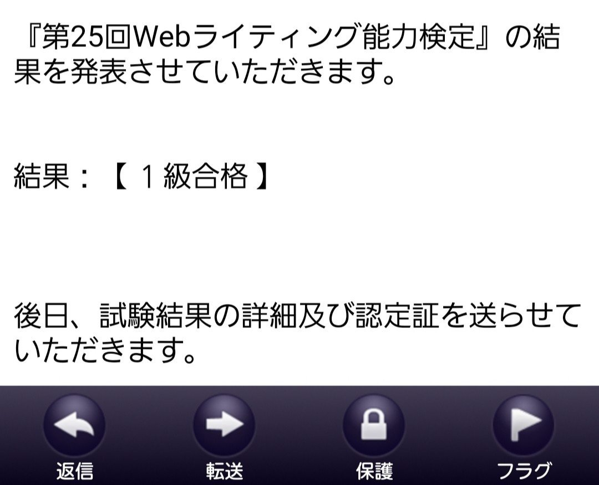
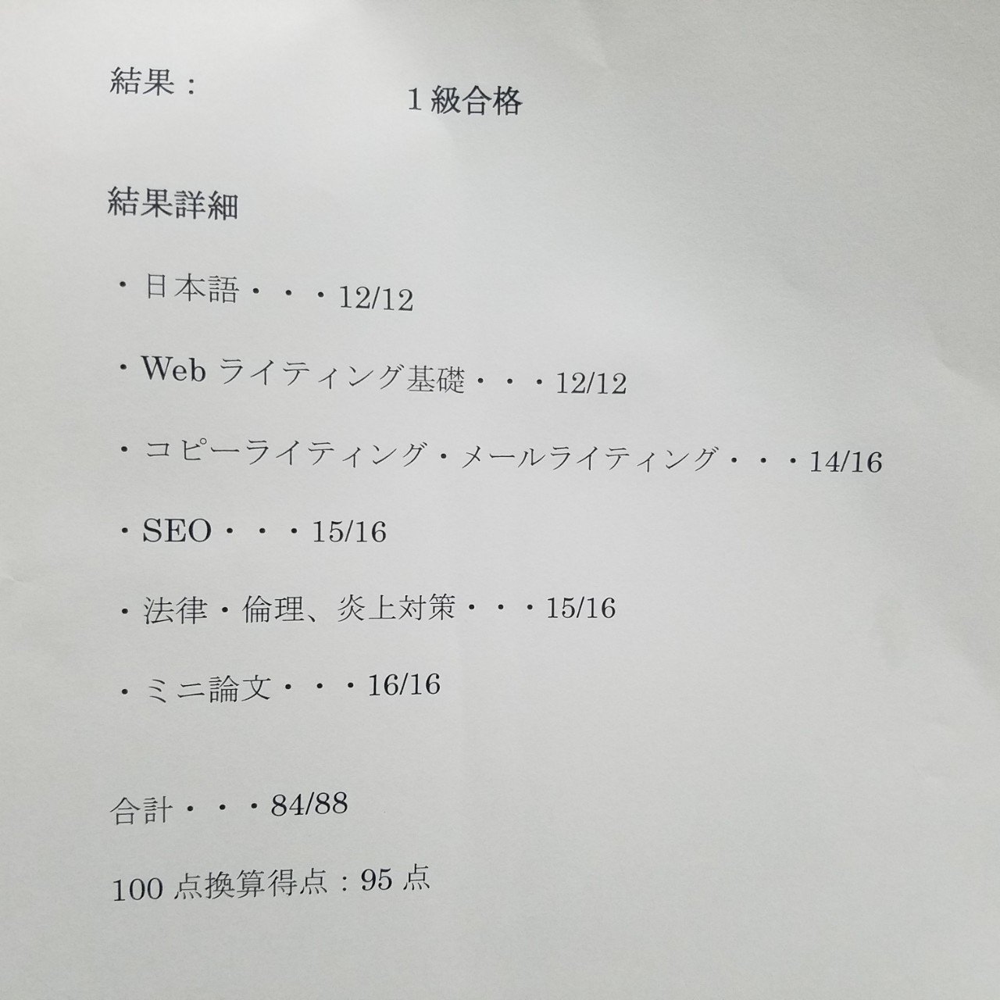

こんばんは🌠進藤です。
Web上に小説や詩を投稿して5年。
今年から初めて創作物以外の文章、例えばクラウドワークスでの文章作成や読書ブログのコンテンツ制作を始めました。
そのスタートを切るためにまず書かねばならないのが、自己紹介文です。
僕はこれまでWeb上で創作物以外にほとんど文章を書いたことがなかったので、改めて「君は一体、何ができるのかい？」と聞かれると困ってしまいました(^-^;
「色々と始めたものの、知識もないのに、このままでいいのかな」
「自分の文章を簡潔に証明できるものがほしい!」
そんな風に考えあぐねていた時に出会ったのが、Webライティング能力検定でした。
Webライティング能力検定とは、信頼感を高めるライティング技術・販売や自己表現に役立つ効果的なライティング技術・効果的なウェブコミュニケーションの取り方など、Webライティングに関する能力を測る検定です。
【引用】社団法人日本WEBライティング協会「必要不可欠なネットリテラシーが学べる！Webライティング能力検定」https://wwkentei.com/
↓そのほか、Webライティング能力検定の詳細は下記URLにて。
ライターを始めるにあたり必要となる資格はありません。つまり、やる気さえあれば、すぐにライターとして活動を始められるのです。
今はTwitterやInstagramなど飛躍的に成長を遂げたSNSのおかげで、インターネット環境とスマートフォンやPCなどの機器さえあれば、簡単に文章を公開し不特定多数の読者に読んでもらえる時代です。
そんな時代だからこそ、正しい知識を持ってライターとして活動したい。そして、Web上にあふれる文章の中でも自らが書いた文章に自信を持ちたい。
そんな思いで、僕はこの検定を受検することにしました。
受検を決め申込を済ませた後、申込者に届く問題集とテキストを開けてみると、思ったよりも内容が専門的で正直焦りました(;´･ω･)こりゃまずい、身の丈に合った試験じゃないかもしれないぞ……泣
でも、試験当日まであと3ヶ月。諦めるには早すぎるので、なんとか自分を鼓舞し勉強を始めることに。
まずは試験内容の紹介を。僕がビビり倒したWebライティング能力検定の試験内容は下記の6科目です。
①国語
②ウェブライティング
③コピーライティング、メールライティング
④SEO
⑤倫理・法律、炎上対策
⑥WEBライティングに関するミニ論文
【引用】社団法人日本WEBライティング協会「Webライティング能力検定 検定詳細」https://wwkentei.com/gaiyou.html
試しに過去問を解いてみることに。試験範囲が意外と広く、国語に関する問題はなんとか解けたものの、SEOや倫理・法律、炎上対策などのWebライティング特有の知識はほとんどゼロだったのでボロボロ。すぐに勉強を始めました。
基本的にはまず過去問を解いて、ミスした箇所の解説をテキストで読みこみました。
よくミスする問題や苦手科目は単語帳にまとめ、電車の移動中や友人を待っている間などのスキマ時間を使って勉強しました。あとは何となくスマートフォンを見て過ごしていた時間を勉強時間にあてたり。こんなことするの、受験生だった10代の頃以来です。笑
あっという間に時間が過ぎ、ついに先月末に行われた本試験を迎えることに。
ここ3ヶ月、珍しく毎日勉強したものの、全ての不安を取り払うことはできません。でも、きっと大丈夫だ。そう言って少し丸くなった自分の背中を励まし、いざ受検。
そして、本日の昼。検定を主宰している一般社団法人日本WEBライティング協会から検定結果を知らせるメールが。どきどきしながら中を見ると……

無事に1級合格！ヽ(*´∀｀)八(´∀｀*)ノ
試験は88点満点で下記の点数により何級かが決まります。今回取った点数は84点。100点換算ですと95点を獲得することができました。
1級・・・・・80～88点
2級・・・・・70～79点
3級・・・・・53～69点
53点以下・・・・・資格なし
【引用】社団法人日本WEBライティング協会「Webライティング能力検定 HOME」https://日本webライティング協会.com/contents/kentei/

勉強が苦手な僕が1級を取得できたのも、「やっぱり書くことが好き！」という気持ちがあったからこそです。
好きなことに対しては正しい知識をつけたい。その一心で、ここまで辿り着くことができました。
Webライティング能力検定を受検したことで、これからもよりよい文章を求め励んでいきたいと思います！
この記事がWebライティングを始められたい方の参考になれたら幸いです✒️
最後までお付き合いくださり、ありがとうございました(^_^)/